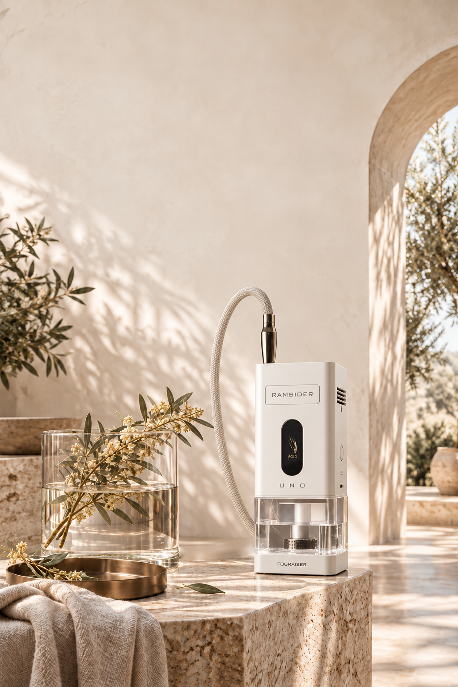
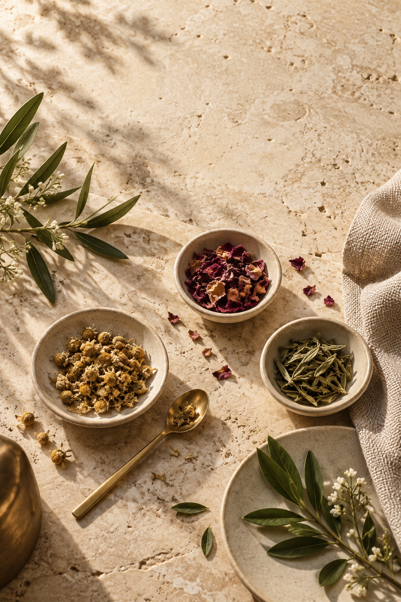
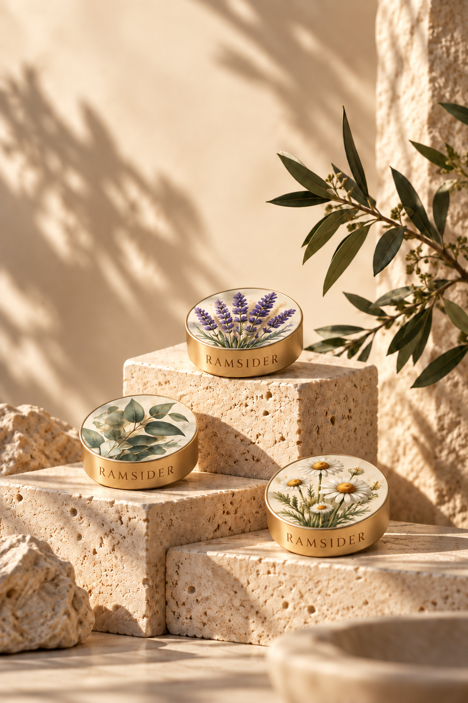
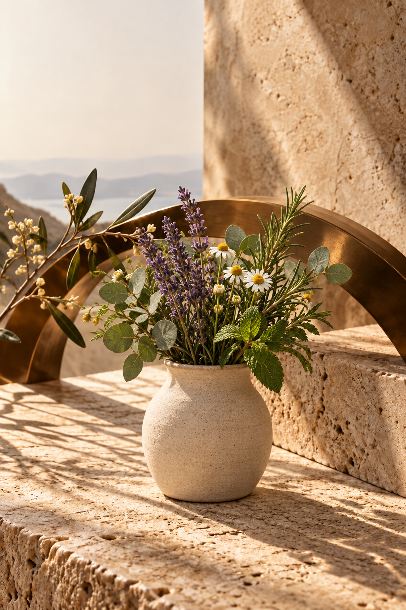

 UNO / Wellness StoryWhat a BreathCan Bring Back. Fire, ash and smoke have no place in a moment of calm. UNO releases the aroma of natural botanicals with precise electronic heat — gently, cleanly and the same way every time. A few quiet minutes for calm, focus and recovery, at home. 01 / Nature, Precisely Released.Every Botanical HasIts Own Temperature.  Lavender, eucalyptus, chamomile, citrus — each plant releases its character at its own temperature. Too little heat and the aroma stays locked in. Too much and it turns harsh.UNO controls heat in three independent zones, together with airflow and water. Each composition gets its own programme — repeated exactly, every time, without combustion, ash or open flame. 02 / Extracts. Compositions. Capsules.Natural Extracts,Composed for a Mood.  Aromatherapy works with natural plant extracts and specialised aromatic compositions — calming, refreshing, grounding. With UNO they are placed in a capsule and matched with a temperature programme designed for exactly that blend.The capsule and its profile travel together, so every session starts right: choose the composition, and the device knows how to release it. 03 / Your Ritual. Your Rhythm.Slow Down.Breathe with Intention.  At home, UNO becomes a personal space for breathing and aroma practices: a few quiet minutes after a long day, a pause before something important, an evening routine you look forward to.Slow, unhurried breathing together with a gentle aroma helps many people relax, restore their emotional balance and simply feel more at ease. No flame, no ash — just the session, exactly as you set it. 04 / One Ritual. Many Moods.Your Space.Your Composition. Calming compositions in the evening, fresh and clear ones in the morning, warm and grounding ones on a slow weekend — each with its own programme.Share the ritual with the people close to you, or keep it as a quiet moment just for yourself. Programmable profiles, simple touch control and the app keep every session effortless.